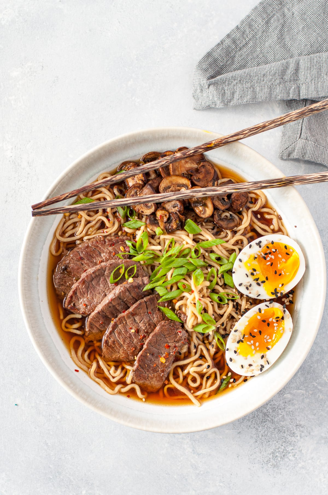

Beef ramen

Ingredients
- 2 packs of instant ramen noodles
- 1 pound (450g) beef (thinly sliced)
- 4 cups beef broth
- 4 cups water
- 2 tablespoons soy sauce
- 2 teaspoons sesame oil
- 2 cloves garlic (minced)
- 1 tablespoon ginger (minced)
- 1 cup sliced mushrooms
- 2 green onions (sliced)
- 2 boiled eggs (optional)
- Salt and pepper to taste
How to make it
- In a large pot, bring the beef broth and water to a boil.
- In a separate pan, heat some oil over medium-high heat. Add the minced garlic and ginger, and sauté for about a minute until fragrant.
- Add the beef slices to the pan and cook until browned. Season with salt and pepper to taste.
- Once the broth is boiling, add the cooked beef, mushrooms, soy sauce, and sesame oil to the pot. Reduce the heat to medium-low and let it simmer for about 10 minutes.
- While the broth is simmering, cook the ramen noodles according to the package instructions. Drain and set aside.
- Divide the cooked ramen noodles into serving bowls. Ladle the beef broth over the noodles, making sure to distribute the beef and mushrooms evenly.
- Garnish the ramen with sliced green onions and boiled eggs, if desired.
- Serve the beef ramen hot and enjoy!
back to main